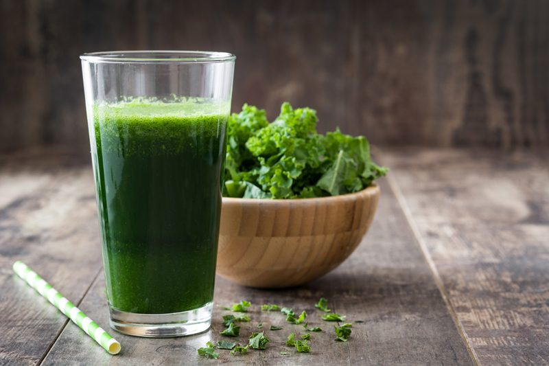

Chia Mint Smoothie
~ raw, vegan, gluten-free, nut-free ~
This evening’s Chia Mint Smoothie turned out pretty darn yummy, I must say. I had bought a large bag of fresh organic mint leaves and stared at it for some time, debating just how much to put in my smoothie.

I didn’t know how strong the flavor was going to be and feared overpowering the recipe with it. I packed a full cup of just leaves, stems removed. I looked at it from the top, I viewed it at eye level, I held the measuring cup to my nose and inhaled the aroma deeply, I fluffed the leaves, I pushed them down, I hummed and I hawed…then I just lost control, and without hesitating, I dumped the whole cup in the blender.
I hit the on switch and hoped for the best. Growing up as an only child, I have learned to entertain myself easily. The :) End result… I could have easily added more mint. You can adjust the measurement to whatever strikes your fancy.
Colon Spasms
Yea, I did just type the words “colon spasms” (haha) but with reason. Peppermint can relieve symptoms of irritable bowel syndrome, including indigestion, dyspepsia, and colonic muscle spasms. These healing properties of peppermint are related to its smooth muscle relaxing ability. Once the smooth muscles surrounding the intestine are relaxed, there is less chance of spasm and indigestion that can accompany it. The menthol contained in peppermint may be a key reason for this bowel-comforting effect. These are good things to know as you slurp your smoothie.
Smoothie Tips
Blending fruits and vegetables together breaks down the cells of plants and improves digestibility. BUT even with that, be sure to chew your smoothies. The chewing process starts the release of the saliva in your mouth. The mixture of saliva and your food is where digestion begins, which is a very healthy habit to create. It may feel strange at first, but soon it will become an automatic response.
Ingredients:
- 2 Tbsp chia seeds
- 1 cup water or coconut water
- 4 cups kale, stems mainly removed
- 1 cup fresh mint
- 1 ripe frozen banana, rough chopped
- 1 cup frozen raspberries, organic
- 1 scoop Raw Vegan Protein Powder
- 1 Tbsp vanilla extract
- NuStevia liquid stevia, to taste
- Pinch Himalayan pink salt
Preparation:
- Soak the chia seeds in 1 cup of water for about 15 minutes in the blender carafe. Enough for them to swell up.
- The first thing to add to your blender is the liquid to help the greens move more freely when blending.
- Start with 1 cup. After everything is added, feel free to add more if desired.
- The more liquid you add the more watery or runnier the smoothie will be.
- Add the kale and mint. Blend until the greens are broken down.
- Blending in stages prevents chunks.
- Add the frozen banana, raspberries, protein powder, vanilla, sweetener, and salt. Blend until smooth.
- I always recommend frozen bananas over fresh. Make a habit out of storing overripe, peeled bananas in the freezer for future smoothies.
- A dash of a high-quality salt will increase the minerals and improve the taste of your smoothie.
- A good green smoothie should be perfectly smooth.
- Optional – Add ice
- Always add the ice last; otherwise, you may over blend the ice, and it will make your smoothie watery rather than frosty.
- I usually only add ice if my fruit wasn’t frozen.
Learn how to design your own smoothies by reading through my Template for Designing Smoothie Recipes.
© AmieSue.com